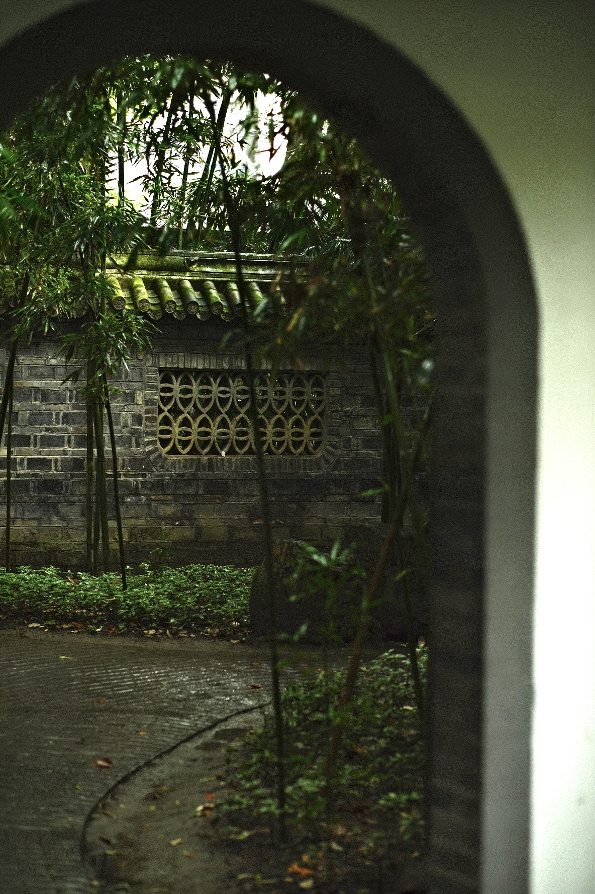
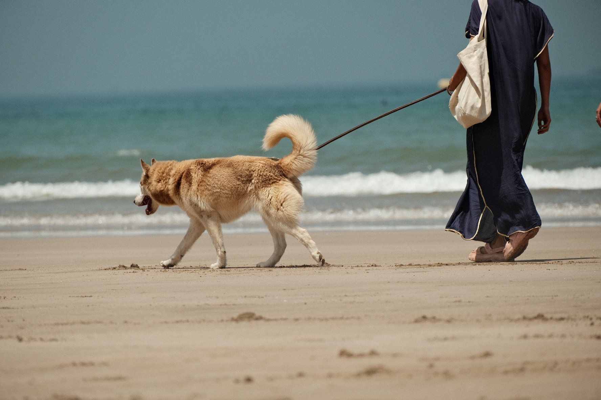
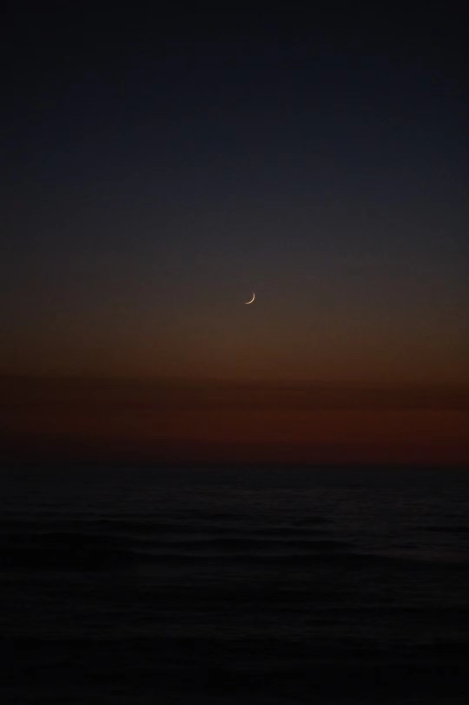
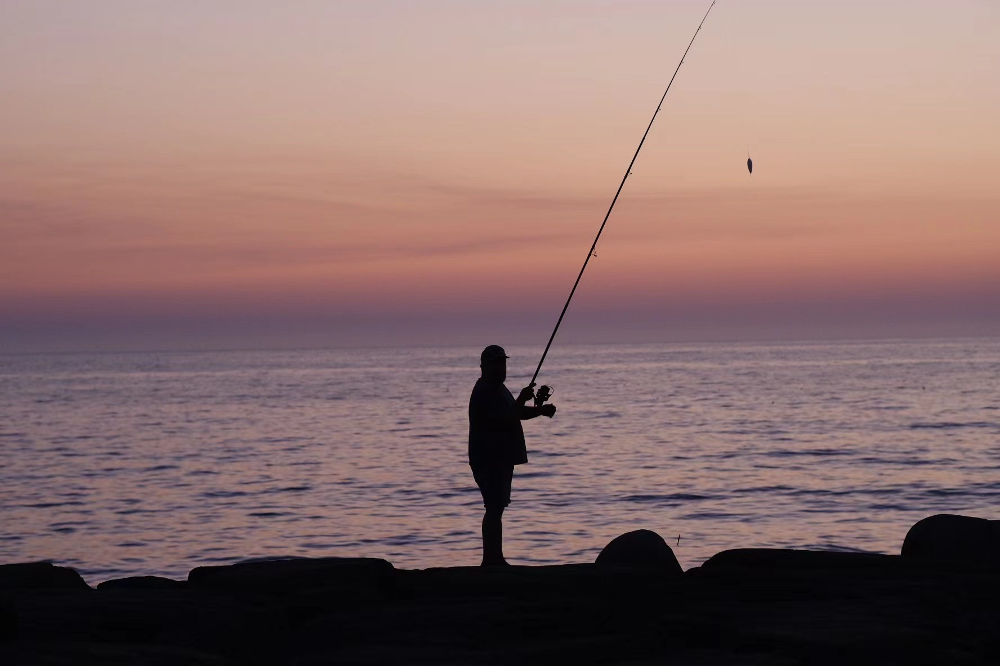
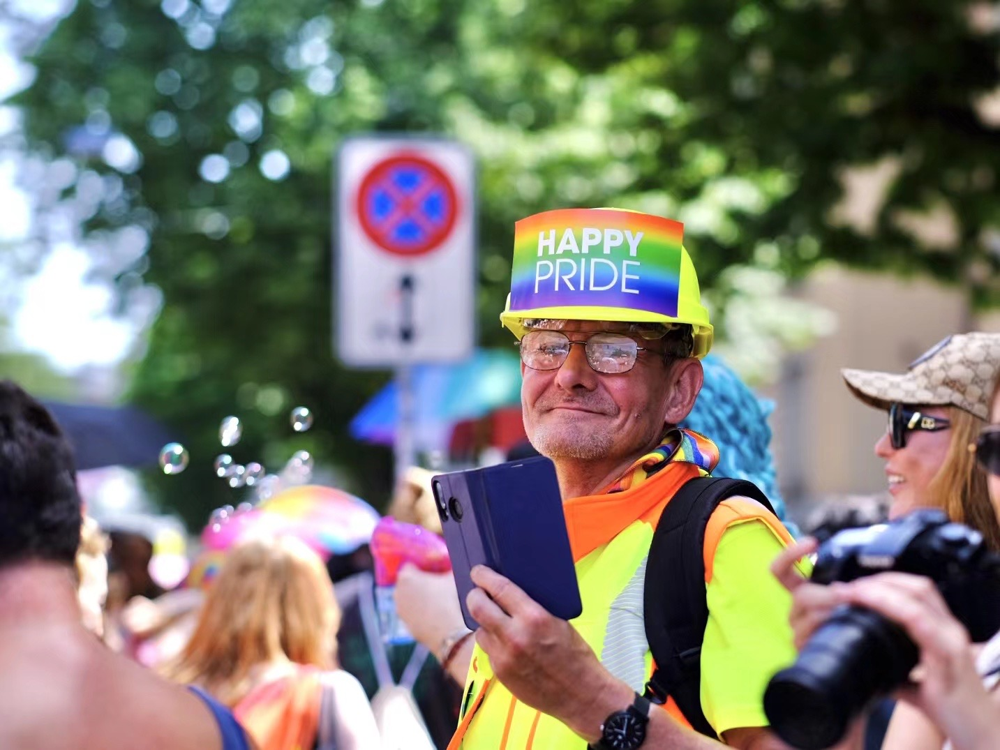

Small wonders.
A collection of photographs and occasional creative projects, inspired by nature, curiosity and the pleasure of looking closely.





Science on film
NOISE
A short film I made with fellow scientists and artists at the 8th Science Filmmaking Marathon, 2025.
The noise of our screens can drown out the world around us. Losing control over the use of technology is more common—and more complex—than we realize. But awareness is the first step.
NOISE screened at the 7th Global Science Film Festival and received the Audience Award at the Bern screening.